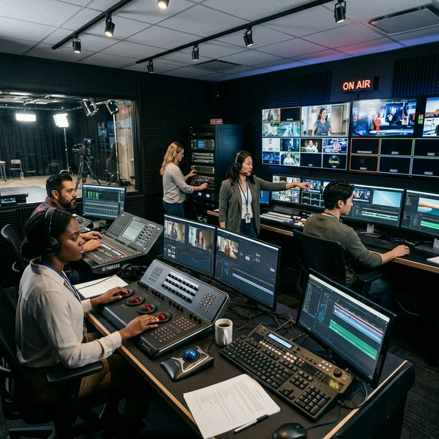

Video Production
From concept development to final delivery, our video production team handles commercials, documentaries, corporate videos, and creative content with professional-grade equipment and expertise.
Since 2015, MediaPro Studios has grown from a small production house to a full-service media company serving clients worldwide. Our passion for storytelling drives everything we do.
With over a decade of combined experience, our team brings together diverse talents in cinematography, sound engineering, editing, and creative direction. We've worked with Fortune 500 companies, independent filmmakers, musicians, and brands to create compelling content that resonates.
Our state-of-the-art facilities and commitment to staying at the forefront of technology ensure that your project receives the highest quality production values from start to finish.

Comprehensive media solutions tailored to bring your creative vision to life with professional-grade precision.
From concept development to final delivery, our video production team handles commercials, documentaries, corporate videos, and creative content with professional-grade equipment and expertise.
Our state-of-the-art recording studios provide pristine sound quality for music production, voice-over work, podcast recording, and sound design with experienced audio engineers.
Expert editing, color correction, visual effects, motion graphics, and sound mixing to give your project the polished, professional finish it deserves.
Strategic guidance for your media projects, including pre-production planning, creative direction, and workflow optimization to ensure your vision comes to life efficiently.
We pride ourselves on excellence, collaboration, and a commitment to technical precision in every frame and soundwave.
Award-winning quality in every project
We work closely with clients at every stage
Meticulous attention to detail
Cutting-edge techniques and technology